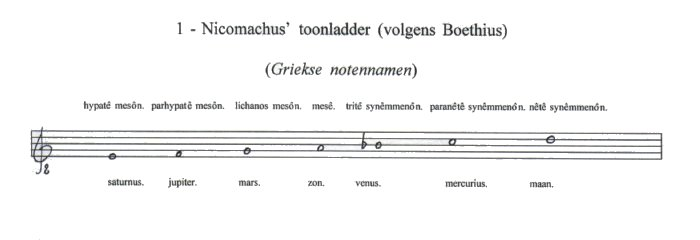
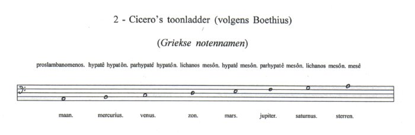

|
Boethius
Hoewel Cicero of Macrobius geen concrete toonladder noemen,
doet Boethius (480-524 n.Chr.) dat wel. In De institutione musica(1) (I. 27) geeft Boethius een
uiteenzetting over welke snaren met welke hemellichamen vergeleken moeten
worden (Qui nervi quibus sideribus comparentur). Hierbij herhaalt hij
Nicomachus’ planeet-toonladder, en bespreekt hij Cicero. Deze toonladders zien er als volgt uit:  
Maar behalve dat Boethius, als belangrijkste compilator van
de muziektheorie, de kennis van deze toonladders aan middeleeuwen en
renaissance doorgaf, is hij ook verantwoordelijk voor de classificatie van de
muziek in drie onderdelen en daardoor voor de naam waaronder men het gehele
complex van de Harmonie der Sferen in latere tijden kende. Instrumentalis is de muziek die tot klinken wordt
gebracht door de instrumenten (kithara, aulos, de stem, slaginstrumenten etc.)
en hieraan is de gehele Institutio in feite gewijd. Niet alleen op de hemelen echter, is de musica mundana betrokken, ook de aarde heeft haar deel in de ‘wereld-muziek’; want deze kan op aarde in de harmonie die ontstaat uit de verschillende en tegenwerkende krachten van de vier elementen en in de wisseling van de seizoenen beluisterd worden, daar wat de winter opsluit, ontsluit de lente, verwarmt de zomer en volgroeit de herfst, en zo dragen alle seizoenen hun eigen vrucht of helpen de andere daartoe. (Iam vero quattuor elementorum diversitates contrariasque potentias nisi quaedam armonia coniungeret, qui fieri posset, ut in unum corpus ac machinam convenirent? (...) Nam quod constringit hiems, ver laxat, torret aestas, maturat autumnus, temporaque vicissim vel ipsa suos afferunt fructus vel aliis ut afferant subministrant; de quibus posterius studiosus disputandum est.(6)). Helaas komt Boethius nergens op de beloofde verdere uiteenzetting terug. Hiermee wil ik mijn verhandeling over de ontwikkeling van het idee van de Harmonie der Sferen beëindigen, na Boethius zijn er, op een paar kleine uitzonderingen na (bijv. in het werk van Johannes Scotus Eriugena, of de relatie tussen magie en muziek bij Marsilio Ficino - zie daarover verder de literatuur in de noten), geen wezenlijk nieuwe ontwikkelingen waar te nemen. Het volgende gedeelte wil dan ook niets anders dan een globale schets zijn (met eveneens globale verwijzingen).
1. Boethius, De
Institutione Musica. Libri quinque. ed. G. Friedlein, Anicii Manlii
Torquati Severinii Boetii De Institutione Musica Libri Quinque. Leipzig,
1858. Herdruk: Frankfurt am Main, Minerva, 1966. Vert. Calvin M. Bower,
Fundamentals of Music. New Haven/London, Yale U.P., 1989. (terug naar tekst) |